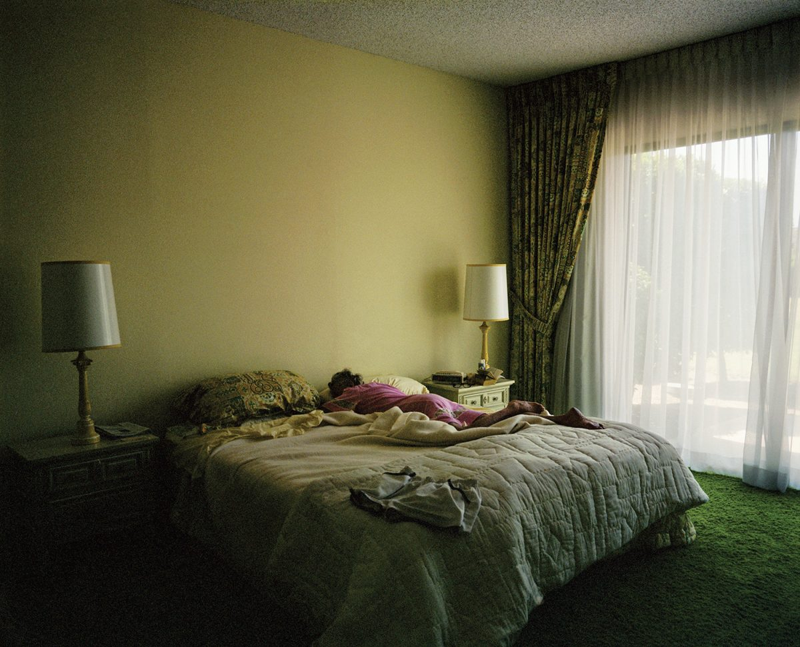
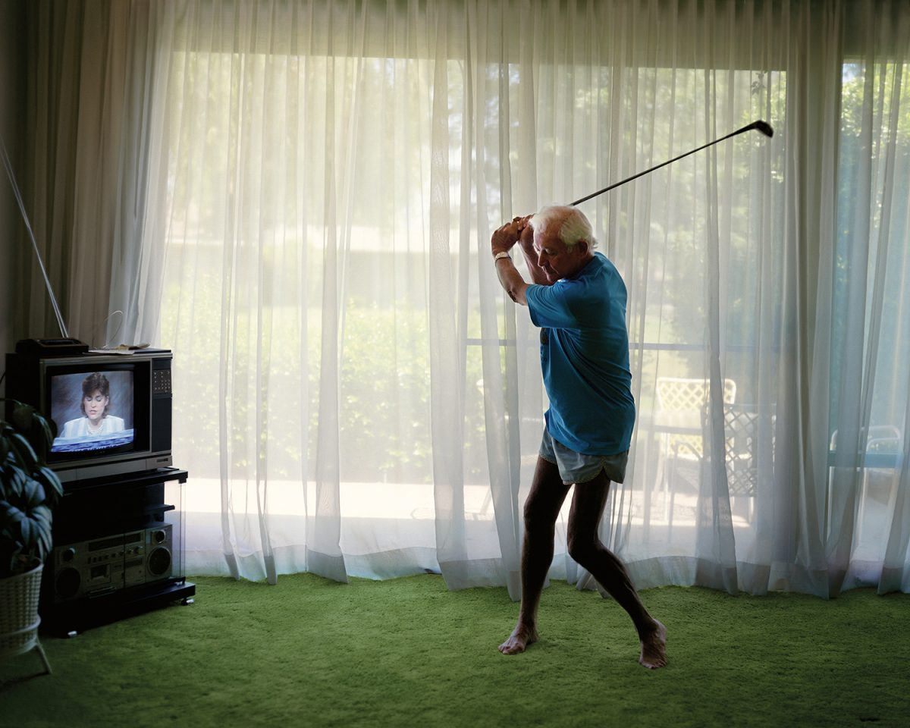
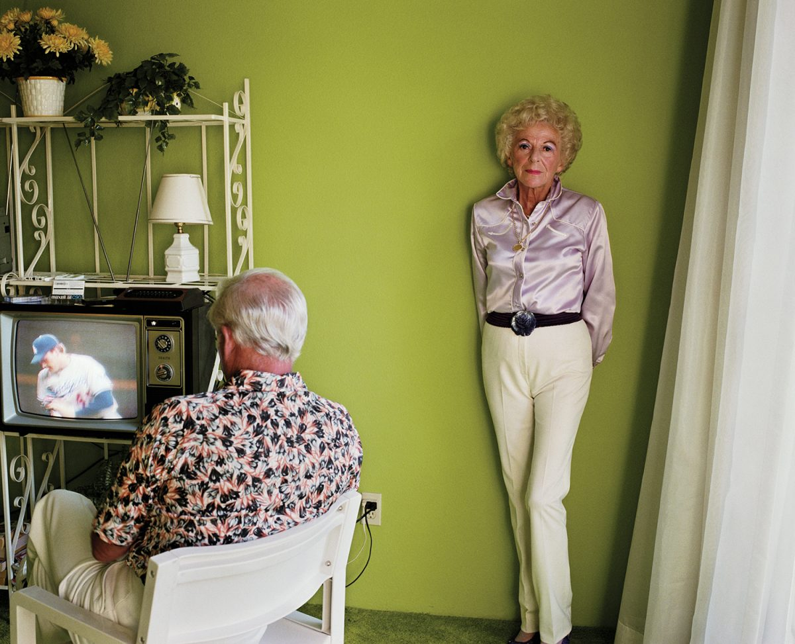
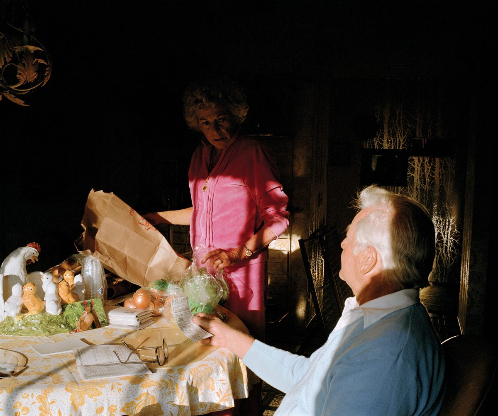

一间卧室，一个正在休息的人。没有面对镜头的表情，也没有特别的事件，人物甚至被床铺、墙面和窗帘围在画面的一小部分。Larry Sultan 的《Asleep in the Afternoon》却让人愿意停下来，看一会儿这个普通房间。
这类照片的吸引力，来自几件事情同时成立：画面有清楚的空间与色彩关系，人的状态与环境发生联系，具体生活又保留了无法被一眼解释完的部分。它们适合慢慢看，也适合用来理解，摄影师能够怎样对待熟悉的人与场景。
《Pictures from Home》于 1992 年出版，围绕 Sultan 的父母与家庭展开，结合照片、家庭影片画面、文字和对话。本文从官网选取四幅作品细读；对画面作用的分析属于本文解读，作者的明确表述另附出处。系列与出版介绍
《午后小睡》：人很小，生活的分量却很大

Larry Sultan，Asleep in the Afternoon，1987。图片由读者提供，与官网作品核对一致。© Estate of Larry Sultan。
这张照片首先值得看的是取景范围。床占据下半部的大面积，墙面在上方展开，人物横卧在两者交界附近。摄影师保留了床头柜、两盏灯、电话、窗帘与地毯，让人的休息被放进一个完整的居室。
如果裁近，只留下头、肩膀和枕头，照片会更明确地说明“有人在睡觉”，但房间的尺度、床铺的重量，以及安静展开的空间都会减少。现在的距离，让读者能够同时看见人和承载这个动作的日常环境。
大面积空墙也有作用。它的细节较少，与床罩褶皱、花纹枕头和窗帘形成疏密差异。人物不必依靠放大面孔来突出，身体与衣服已经在这个较平静的背景前形成变化。空白因此没有简单地浪费画幅，而是在改变观看的速度。
光线没有把所有地方照得一样亮
右侧窗帘明亮，床铺从右向左逐渐进入较暗的区域，近处与房间左侧更沉。这样的明暗分布，让人感觉到空间的纵深，也让视线从窗边移动到床上。
人物的面孔没有清楚展示，身体轮廓和休息姿态仍可辨认。照片保留了一种观看上的距离：我们进入了私密的卧室，却没有获得对人物全部表情的访问。它可以让人联想到午后的安静、疲倦或独处，但这些联想不能直接当成人物当时的心理事实。
这也是它与某些标准人像的区别。照片没有把“看清脸”作为唯一任务，而是让光线描述房间里正在发生的状态。仅凭成片，不能进一步确定现场是否使用了辅助灯或怎样曝光。
色彩在同一个房间里产生联系
墙面偏黄绿，床罩接近灰绿，地毯是较深的绿色，窗帘与床边物品也延续着这一组颜色。它们并不完全相同，明度和材质的差异让墙、床和地面仍然能够分开。
人物衣服上的粉紫色占比不大，却在这片黄绿色环境中形成明显差异。视线容易回到身体附近；花纹枕头、床罩褶皱和床尾衣物又提供一些更细的观看内容。
因此，它的颜色不只是某种可以套用的“复古滤镜”。颜色与真实物品一起出现：地毯怎样铺开，墙面怎样包围床，衣物怎样留在生活现场。若只模仿偏黄绿色调，却没有这些关系，未必能得到同样的画面效果。
这张照片的长处，在于让一个很小的动作与整个房间发生联系。它不提供完整情节，却给了读者足够具体的细节，让人愿意停留。至于人物是否幸福、是否孤独，照片没有给出唯一答案。
《练习挥杆》：动作与地点之间有一点不协调

Larry Sultan，Practicing Golf Swing，1986。来源：官网原图。© Estate of Larry Sultan。
父亲的居家着装、赤脚和挥杆动作，与客厅里的电视、音响、窗帘放在一起，产生了轻微的错位：属于运动的动作，出现在熟悉的室内。画面由此有了幽默，却没有把人物处理成一个单纯的笑话。
球杆向右上方伸出，双臂与转动的身体连接成一条清楚的动作线。明亮纱帘提供了细节相对均匀的背景，让轮廓容易辨认；弯曲的腿与离地的脚使这一刻具有尚未完成的动势。
左侧电视没有被排除。屏幕中的人物与房间里的人形成两个观看位置，家中的日常仍在继续。电视是否具有更具体的象征，需要额外资料，不能仅凭它出现在画面里就确定。
这幅作品值得看的，是动作、背景与生活物件共同保留了一个具体的人。把人物单独移到干净背景前，动作仍然存在，但这份发生在家里的趣味会减少。
《母亲摆姿》：一张照片里可以有两种状态

Larry Sultan，My Mother Posing，1984。来源：官网原图。© Estate of Larry Sultan。
母亲在右侧靠墙站立，正面面对镜头；父亲位于左侧近景，背向镜头，朝着电视。一个人在配合被观看，另一个人的动作朝向房间里的其他事物。两种状态出现在同一张照片中。
绿色墙面把他们放进同一个空间，又在两人之间留下间隔。母亲浅色、光滑的衣服与父亲密集花纹的衬衫形成差异，直立的身体与坐姿也有不同节奏。这些关系让画面保持清楚，同时容纳了不完全同步的生活。
若只保留母亲，照片会更接近一张独立肖像；保留父亲与电视，则让“摆姿”发生在一个仍有其他活动的家庭现场。但两人的朝向不同，并不能证明他们关系冷淡，更不能替代对婚姻的判断。
这张照片的丰富之处，是让人物在画面中的关系可见，同时没有把关系解释完。观看者能够发现差异，却仍需要承认自己不知道的部分。
《厨房餐桌旁的交谈》：物件多，也可以有秩序

Larry Sultan，Discussion, Kitchen Table，1985。来源：官网原图。© Estate of Larry Sultan。
餐桌上有纸袋、食品包装、纸张、眼镜和摆件，并不整洁。人物也没有一起面对镜头：父亲坐在近处，母亲站在桌后，手与桌面的东西发生联系。照片的关注点落在两个人共处的情境中。
局部亮光经过母亲的粉色衣服、手臂与父亲的头部，较暗的背景则压低了其他细节。近处的父亲、桌面物件、后方的母亲构成几个不同距离，物品虽然多，观看仍有可以跟随的层次。
这里若把桌面清空，画面可能更简洁，却也会失去人物正在处理什么的线索。它的成立并不意味着越乱越有生活感，而在于物件、手势和人的位置没有彼此脱离。
作品标题说的是交谈。它不能让我们知道具体说了什么，也不足以确认这是一场争执。值得分析的是身体方向与物件怎样使互动可见，而非替人物编出一句台词。
看起来像日常，不等于没有安排
这些照片具有生活现场的感觉，但不能把它们全部理解成偶然抓拍。Sultan 在 1990 年接受 Catherine Liu 访谈时，明确谈到把郊区住宅视为舞台，并注意卧室的意义及其布置。他也指出，没有摆姿的照片，有时反而看起来最像摆拍。BOMB 访谈
这为前面的观看提供了一个重要背景：日常生活可以被摄影师组织，组织过的画面也可能保留真实关系。判断作品时，需要同时看见生活材料和摄影师的选择，不能只依靠“自然”或“摆拍”两个标签。
比如，《母亲摆姿》本来就在标题中承认姿态；《练习挥杆》的动作十分明确。它们能否成立，要看动作在这个空间里产生什么，以及人物有没有被保留为具体的人。
因此，对初学者而言，借鉴这些照片也不必等同于等待一切自己发生。可以与熟悉的人讨论一个动作，选择一个机位，保留合适的物件。关键是知道为什么这样安排，并给对方自己的状态留下余地。
作品的分量，也来自摄影师怎样对待家人
在同一篇访谈里，Sultan 谈到对父母的关切，以及让他们通过文字表达自己意见的重要性。他不愿只把他们当作某种社会失败的象征。LACMA 的策展介绍也强调，书中包含父母对照片的反应，使家庭关系与摄影师自身的视角交织起来。BOMB 访谈，LACMA 策展介绍
这使《Pictures from Home》的意义超出几张配色漂亮的室内照片。父母既是被观看的人，也参与了作品如何讲述他们。家庭形象因此带着协商，而非只有摄影师单方面给出的结论。
官网刊载的书中节选，又把这个项目与他希望留住父母、留住时间的愿望联系起来。这是作者明确说出的感情背景，但不能把它机械地套成每一幅照片的唯一含义。作者自述节选
前面的卧室、客厅和厨房，因而不仅是方便进入的拍摄地点。它们是这些人持续生活的地方，休息、运动、观看电视与交谈，都发生在同一段关系和时间中。单幅照片留下局部，系列让这些局部逐渐形成一个有变化的家庭形象。
为什么值得看，仍要回到具体画面
这组作品的长处，可以从三个层面理解。画面层面，空间、光线、颜色与动作有明确配合；人物层面，生活状态没有被漂亮表情与标准姿态完全替代；系列层面，照片与家庭材料让人逐渐理解同一群人的不同面向。
它们也有自己的取舍。环境占比大，面部可能不清楚；人物有时处在阴影中，阅读需要停留；关系没有明确答案，观看者需要容纳不确定。若拍摄任务是清楚展示礼服、妆容或正面形象，这些方式未必可以直接照搬。
但对于想学习拍人和日常空间的人，它提供了很具体的可能：普通动作值得留意，家具不必总被虚化，房间可以参与肖像，熟悉的人也能被反复观看。学习的重点不在于把每个家都拍成同样的黄绿色，而是理解一次选择怎样让这个人、这个动作和这个地方相互关联。
再回到《午后小睡》：如果人物被裁近，房间不见了；如果所有暗部都被提亮，明暗的距离变小；如果床铺与衣物被完全整理，生活痕迹也会改变。原作的吸引力就在这些关系同时存在之中。它让一个没有大事件的下午，仍然具有值得细看的形状。
资料与继续浏览
- Larry Sultan：Pictures from Home 官网选图与作者自述。本文四幅作品的英文名称与年份均沿官网。
- MACK：Pictures from Home 出版介绍。
- Catherine Liu：Larry Sultan 访谈，BOMB，1990 年 4 月 1 日。
- Rebecca Morse：Larry Sultan: The Moment between Things，LACMA，2014 年 11 月 10 日。
资料核对：2026 年 10 月 26 日。中文作品名为本文便于阅读的译名；依据官网选图、访谈和出版资料分析，未逐页阅读整本摄影书，也未将成片解读写作现场拍摄记录。
留言
由 Disqus 提供。